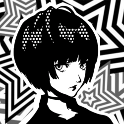

Death XIII

Tae Takemi
Confidant Abilities
| Rank | Ability |
|---|---|
| 1 | Rejuvenation: Increases the selection of healing items at the clinic. |
| 2 | - |
| 3 | Sterilization: Adds more healing items to the clinic. |
| 4 | - |
| 5 | Immunization: Adds support items to the inventory at the clinic. |
| 6 | - |
| 7 | Discount: Decreases the price (-50%) for all items sold at the clinic. |
| 8 | - |
| 9 | - |
| 10 | Resuscitation: Increases the selection of revival items at the clinic. |
Schedule
- Time of DayDaytime
Day of Week: Any Day (won’t appear after Rank Up for the next 3 days)
Location: Takemi Clinic in Yongen-Jaya
Rank Up Progression
| Rank | Requirements / Dialogue Choices | Next Pts |
|---|---|---|
| 1 | 1. "Got any 'special' medicine?" 2. Any (8 choices, no effect) 3. "Please go easy on me." (+10) Reward: Guts +1♪ | 0 |
| 2 | Requires Guts Lv 2 (Bold). 1. "I have a bad heart." (+5) 2. "I agree." (+5) 3. (Phone) "I'm totally fine." / "I think I have superpowers." (+5) Reward: Guts +1♪ | 0 |
| 3 | 3. "I don't mind." / "I need the medicine." (+5) 4. (Phone) "Of course not." (+5) Reward: Guts +1♪ | 11 |
| 4 | 1. "Dr. Takemi will help." (+5) 2. "You seem happy." (+10) 3. (Phone) "I'll reflect on my mistakes." (+5) Reward: Guts +1♪ | 20 |
| 5 | 3. "That's good." (+10) 4. (Phone) "About Miwa-chan?" (+5) Reward: Guts +1♪ | 11 |
| 6 | 3. "It suits you." (+10) 4. (Phone) "You can count on me." / "Anything for you." (+5) Reward: Guts +1♪ | 11 |
| 7 | 1. Any (+5) 3. "Just rest for today." / "Anything I can do?" (+5) 4. "We all do sometimes." (+10) / "I’m glad you did." (+5 Romance Flag) Reward: Guts +1♪ | 0 |
| 8 | Requires Charm Lv 4 (Charismatic) + Completion of Bad Medicine request (triggered after Rank 7). 1. - 2. "I'm your ally." (+5 Romance Flag) Actual Rank Up Dialogue: 2. "Let's get to work, Doctor." (+15) 3. "It's for Miwa-chan." (+15 Romance Flag) 4. (Phone) "I'll be cheering you on." / "Anything else I can do?" (+5) Reward: Guts +1♪ | 42 |
| 9 | 1. "It was rough." (+10) 3. "It wanted to see you." (+0) 4. "I love you." (+5) Friendship: "That sounds good." (+0), (Phone) "I'm glad we saw it through." (+5) Romance: "It isn't a joke." (+15), (Phone) "So did you." (+5) Reward: Guts +1♪ | 36 |
| 10 | Friendship rank up = Daytime Romance rank up = Evening | N/A |
Gift Guide
| Gift Item | Confidant Points | Purchase Location | Price |
|---|---|---|---|
| Heart Ring | +50 | Jewelry Store, Station Underground Mall, Shibuya | ¥88,000 |
| Mini Cactus | +50 | Flower Shop, Shinjuku (Night) | ¥1,600 |
| Black Mug | +50 | General Store, Shinjuku | ¥1,800 |
| 48-Sided Puzzle | +50 | General Store, Shinjuku | ¥3,200 |
Bonus Events
Hangout Inokashira Park (Requires Death Rank 3 ~ 9)
- "What's on today's menu?" (+15)
Hangout Tsukishima (Requires Death Rank 9+ Friendship Only)
- "Wow. Cooking for me now?" (+15)